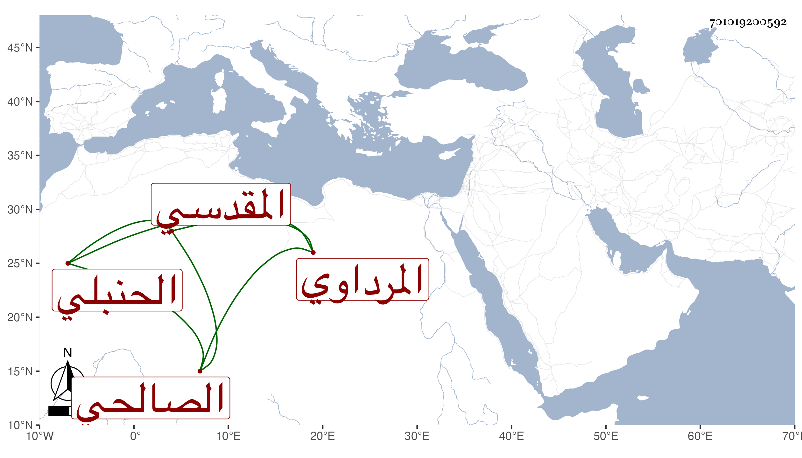

0902Sakhawi.DawLamic.ITO20230111-ara1.EIS1600.701019200592
Biography ID: 701019200592
أحمد بن عبد الله بن أحمد بن زعرور بالفتح بن عبد الله بن أحمد بن أبي محلى المرداوي المقدسي الصالحي الحنبلي ويعرف بابن عبد الله وربما لقب زعرور ويقال أنه لقب جده أحمد . ولد في سنة خمس وستين وسبعمائة وسمع على أبي الهول الجزري النصف الثاني من عوالي أبي نعيم تخريج الضياء وحدث سمع منه ابن فهد وغيره . ومات .
